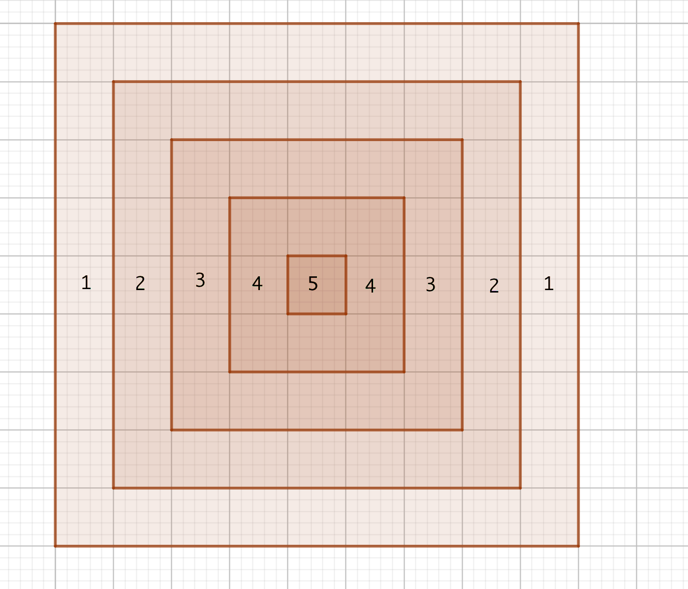

19. Repetition
Sedan är det bara att repetera.
Uppgifter
- Vi kastar en tärning formad som en tetraeder som slumpmässigt ger tal mellan 1 till 4 och en tärning formad som en oktaeder som slumpmässigt ger tal mellan 1 till 8. Bestäm sannolikheten att
- den totala summan av ögontalen är större än 6.
Rita upp en tabell. Kom fram till \( \dfrac{1}{8} = 0,125 \).
- att tetraedern ger ett större ögontal.
Rita upp en tabell. Jämför areorna som bildas. Kom fram till \( \dfrac{3}{16} \).
- den totala summan av ögontalen är större än 6.
- Vi väljer slumpmässigt två tal. Det första från intervallet \( [-1,1] \) och det andra från \( [-2,1] \). Bestäm sannolikheten att summan av talen är positiv.
Rita en bild, tabell. Jämför den arean som vi söker efter med totala arean.
Kom fram till \( \dfrac{1}{3} \).
- På lunchrestaurangen på Bertils arbetsplats har varje dag samma menu som består av 7 st olika maträtter. Bertil äter varje dag lunch på restaurangen och han väljer slumpmässigt en maträtt. Bestäm sannolikheten att Bertil äter under en arbetsvecka 5 st olika maträtter.
Vi söker \( \dfrac{\text{gynsamma}}{\text{totala}} \). Gynsamma fall är \( 7 \cdot 6 \cdot 5 \cdot 4 \cdot 3 \) och totala fall är \( 7^5 \).
Sannolikheten är 0,15.
- En tärning kastas 5 gånger. Lönar det sig att slå vad om att ett ögontal inte kommer två gånger efter varann?
Vi söker \( \dfrac{\text{gynsamma}}{\text{totala}} \). Gynsamma fall är \( 6 \cdot 5 \cdot 5 \cdot 5 \cdot 5 \) och totala fall är \( 6^5 \).
Sannolikheten är 0,48.
Eftersom sannolikheten är mindre än ,50 så lönar det sig inte.
- Lönar det sig att slå vad om att då två slantar singlas tre gånger, så får man i alla fall en gång två kronor.
Vi får \( P(\text{i alla fall två kronor}) = 1 - P(\text{inget par med korna}) = 1 - (\dfrac{3}{4})^3 \approx 0,58 \).
Jo, det lönar sig, eftersom sannolikheten är större än 0,50.
- Biljettkontrollanter undersöker slumpmässigt cirka var 300:e passageres biljett. Bestäm sannolikheten att en person som åker till jobb och hem inte blir fast under ett år. Ett år har 220 arbetsdagar.
Vi får \( P(\text{Blir fast}) = 1 - P(\text{blir inte fast}) = 1 - (\dfrac{299}{300})^{440} = 0,77 \).
- Daniel kastar slumpmässigt pil mot tavlan som är nedan. Bestäm väntevärdet av kastet.

Bestäm arean för varje område och jämför det med hela arean, 81 rutor, för att få sannolikheterna.
Väntevärdet, \( E(x) = 2,04 \).
- På Annas skolväg finns det tre övergångsställen med trafikljus som fungerar oberoende av varandra. Trafikljusen visar grönt 30 %, 45 % och 60 % av tiden. Bestäm sannolikheten att på grund av rött ljus så månste Anna stanna
- en gång
Bilda tre fall där en av ljusen visar rött.
Vi får \( 0,70 \cdot 0,45 \cdot 0,60 + 0,30 \cdot 0,55 \cdot 0,60 + 0,30 \cdot 0,45 \cdot 0,40 = 0,34 \).
- i alla fall en gång.
Vi går via komplementet, \( P(\text{i alla fall en gång}) = 1-P(\text{ingen gång}) = 1- 0,30 \cdot 0,45 \cdot 0,60 = 0,92 \).
- en gång
- En slant singlas 60 gånger. Bestäm sannolikheten att antalet klavor är
- 30 st
Vi har upprepat försök. Vi får \( \displaystyle\binom{60}{30}0,50^{30}\cdot 0,50^{30} = 0,10258 \approx 0,103 \).
- Mellan 29 och 31 stycken.
Vi får \( \displaystyle\binom{60}{29}0,50^{29}\cdot 0,50^{31} + \displaystyle\binom{60}{30}0,50^{30}\cdot 0,50^{30} + \displaystyle\binom{60}{31}0,50^{31}\cdot 0,50^{29}= 0,30112 \approx 0,301 \).
- Rita upp fördelningen på GeoGebra. Hur många klavor har största sannolikheten?
Vi får

Vi ser att största sannolikheten har 30 gånger klave.
- 30 st
- Av finländarna är 51 % kvinnor. Bestäm sannolikheten att då vi slumpmässigt väljer 10 personer så får vi lika många män som kvinnor.
Vi har binomialsannolikhet. Vi får \( \displaystyle\binom{10}{5}0,51^5\cdot 0,49^5 = 0,25 \).
- Av alla barn som föds är 51,2 % pojkar. Bestäm sannolikheten att i en familj med 6 st barn så har vi minst 2 st pojkar och 2 st flickor.
Vi vill ha sannolikheten för \( P(\text{2 pojkar}) + P(\text{3 pojkar}) + P(\text{4 pojkar}) \). Sannolikheten för flickorna är det motsatta.
Vi får \( 0,78 \).